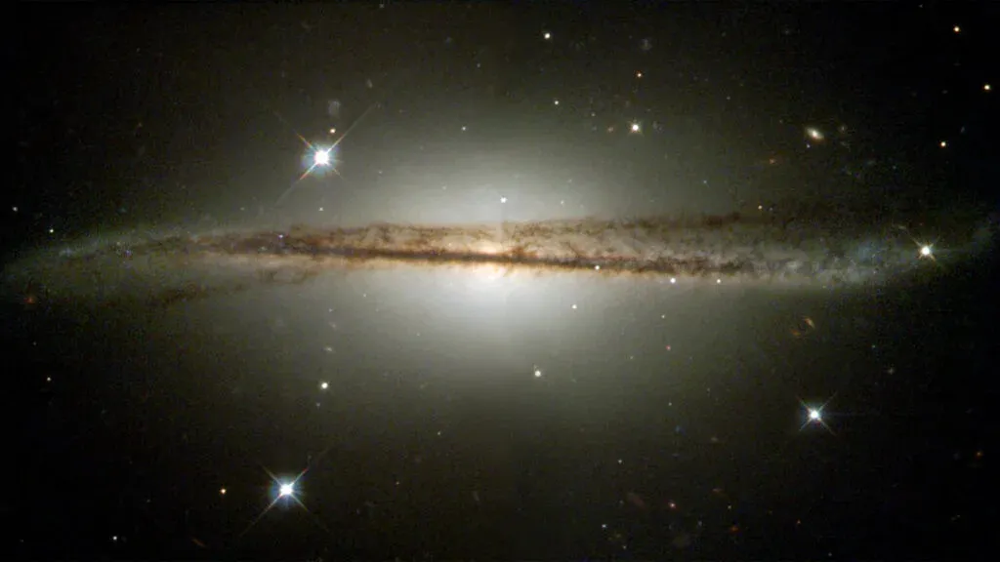

Posted 2d ago
The Milky Way is sort of twisted like this galaxy pictured here
The Milky Way is twisted, and astronomers may finally know why. They're laying the blame
on a
football-shaped, tilted halo of dark matter that envelopes our galaxy. The common
image of our
galaxy resembles a flattened disk similar to a vinyl record, but what you
might not imagine is the flared
skirt at its edge structured like the outer ring of a frisbee.
These features have remained sort of mysterious for quite a while, but now, astronomers from
the Center
for Astrophysics | Harvard and Smithsonian (CfA) have performed calculations that
indicate the halo of
dark matter enveloping the Milky Way could be "off-kilter," and this could be
causing the flared edge and
warped shape of our galaxy.Not only might this revelation help us
better understand the evolution of the
Milky Way, but it could also reveal more about the nature
of dark matter and how it shapes the overall
development of galaxies.
Dark matter is a challenge for scientists to explain because it does not interact with light, making
it
effectively invisible and meaning it can’t be made of the same atoms that constitute everyday
matter. Yet,
this mysterious substance makes up as much as 85% of the matter content of the
universe, meaning the "stuff"
that comprises stars, planets, cosmic clouds of dust and even
our bodies — everything we see around us on
an everyday basis — only accounts for around
15% of the universe’s matter.The only way scientists have
been able to infer the presence of dark
matter is via its interactions with gravity and the influence this
has on everyday matter and light.
This influence is a fortunate thing, in fact, because galaxies are rotating
so utterly fast that, in some
cases, the gravitational effect of visible matter within these entities
wouldn’t be sufficient to prevent
them from flying apart. Dark matter is the gravitational glue that holds
galaxies together.
Thus, researchers have deduced that most, if not all, galaxies are wrapped in a halo of dark matter.
And for the Milky Way, that halo of dark matter is thought to extend out past the halo of stars
surrounding the galaxy's main disk and central galactic nucleus.